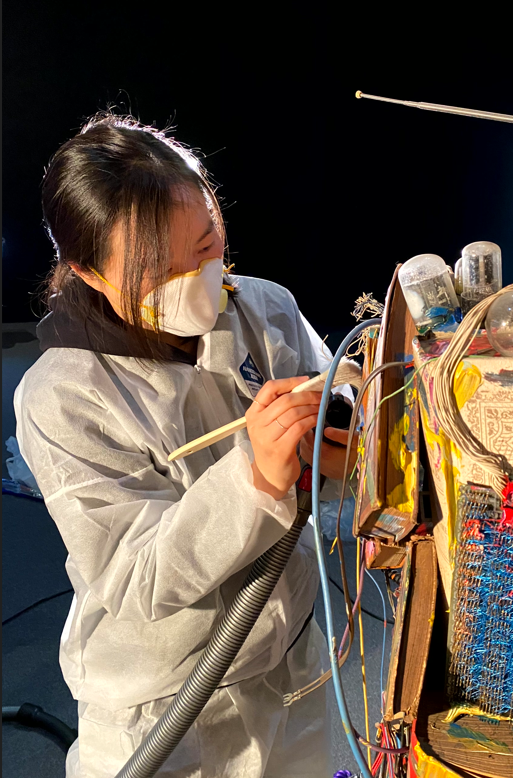

네덜란드와 한국을 기반으로 활동하는 현대미술 보존가입니다.
오브젝트 복원에서부터 뉴미디어 아트, 설치 미술의 수복 및 보존에 이르기까지
유형의 가치와 무형의 의도를 잇는 작업을 수행합니다.
시간에 의해 변형되는 예술의 물리적 성질을 탐구하며,
작가의 예술적 언어가
미래 세대에게 온전히 전달될 수 있도록 과학적 분석과 인문학적 해석을 병행합니다.
A contemporary art conservator based in the Netherlands and South Korea.
I bridge the gap between tangible materiality and intangible intent,
ranging from individual object restoration to the preservation of time-based media and installation art.
By investigating the physical transformation of art over time,
scientific analysis is integrated with humanistic interpretation to ensure an artist’s creative language is faithfully transmitted to future generations.